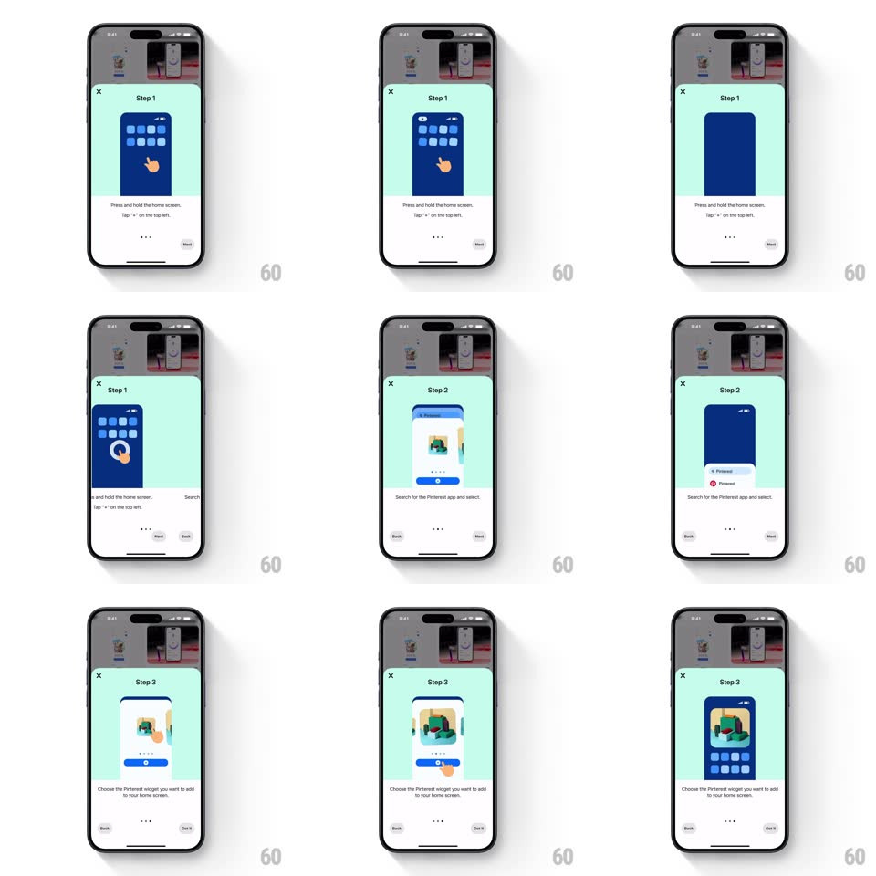

Media
Frame-by-frame

Rebuild this interaction 1:1: Pinterest's widget onboarding sheet - a bottom sheet ("Try the Pinterest widget", Learn how) opens a 3-step carousel where each step's illustration animates the gesture it teaches: press-and-hold the home screen, search for Pinterest, pick the widget.

Rebuild this interaction 1:1: Pinterest's widget onboarding sheet - a bottom sheet ("Try the Pinterest widget", Learn how) opens a 3-step carousel where each step's illustration animates the gesture it teaches: press-and-hold the home screen, search for Pinterest, pick the widget.
## Integration
Integration: stack-agnostic spec - springs given as stiffness/damping, timed motions as duration + curve; map every value to your framework and animation library of choice.
## Scene
A rounded bottom sheet over the dimmed Pinterest feed: X close top-left, mint-green illustration area showing a phone-frame animation, instruction copy ("Press and hold the home screen. Tap '+' on the top left"), three pagination dots, and Back/Next buttons (Got it on the last step).
## Motion spec
Pattern: step carousel with self-demonstrating illustrations.
- Sheet entrance: slides up (translateY 100% -> 0, spring ~350/22, 400ms) over a 50% dim.
- Step transitions: Next slides the current illustration and copy out left (translateX -100%, 250ms, ease-in) as the new step slides in from the right (translateX +100% -> 0, 300ms, ease-out); Back reverses the direction.
- Each illustration loops its own demo: a cartoon finger presses and holds (scale dip, haptic-ring pulse at 1s intervals), a search field types itself, or widget thumbnails pulse for selection - each on a ~2s loop.
- The pagination dots update with the slide (active dot stretches to a pill, 200ms).
- Copy crossfades with the illustration but 80ms later - image leads, words follow.
## Calibration
- Step slides are strictly horizontal - the sheet itself never moves.
- The demo loops restart on each step entry, first beat immediate - the user never waits for the loop to come around.
## Reduced motion
Steps crossfade; illustrations show a single static frame.
## Don't miss
- The illustration phone is drawn, not a screenshot - simplified blue home-screen grid.
- The finger's press-and-hold pulse is a ring that expands from the touch point and fades (scale 0.5 -> 1.5, opacity out, 800ms).